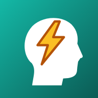

頭痛ログ ヘルプ
English: Help in English
1. はじめに（最初の準備）
① アプリを開く・ホーム画面に置く
スマホのブラウザ（iPhone は Safari、Android は Chrome）で https://headache.doitmyself.net/ を開きます。 iPhone は共有ボタン →「ホーム画面に追加」、Android はメニュー →「ホーム画面に追加」（アプリをインストール）で、アプリと同じように使えます。
② 位置情報を許可する
現在地の気圧・天気を調べるために、位置情報を使います。最初に許可を求められたら「許可」を選んでください。 位置情報は、気圧を調べる時と、記録に気圧を付ける時にだけ使います。許可しなくても記録はできますが、気圧は付きません。
③ Google にログインする（任意）
右上の ログイン を押して Google アカウントでログインすると、記録が自分の Google ドライブに保存され、機種変更や複数の端末でも同じ記録を使えます。 確認画面では「Google ドライブのファイル…」にチェックを入れて「続行」を押してください。 ログインできると、ボタンの縁が緑色にふわっと光ります（オンラインで同期できる状態）。 ログインしなくても、記録はこの端末に保存されます。
④ 薬を設定する（任意）
⚙ 設定 →「薬の設定」で、よく飲む薬を追加しておくと、服薬を記録する時に選べます（設定を参照）。
頭痛が起きた時にすぐ記録できるよう、ホーム画面に置いておくのがおすすめです。
2. 頭痛を記録する
- ホーム画面の「頭痛を記録」で、スライダーを動かして頭痛の度合いを選びます。
- 必要なら、付箋メモ（例: こめかみがズキズキ）を書きます。メモのある記録は、グラフに付箋マークが付きます。
- 記録する を押します。
| 0 | なし |
|---|---|
| 1 | 軽い |
| 2 | やや痛い |
| 3 | 痛い |
| 4 | かなり痛い |
| 5 | 耐えられない |
あとから記録する（過去の日時にする）
「記録する」ボタンの上の日時欄（「日時」）をタップすると、記録する日時を過去に変えられます（未来は選べません）。 現在時刻に戻す で元に戻ります。 過去の日時で記録した場合は、その日時の気圧（過去のデータ）を調べて付けます。場所は、いまいる場所です。
気圧は、記録した時に開いていたアプリが取得した値を付けます。気圧・場所が取れない時は、その情報なしで保存します。
3. 服薬を記録する
- 「服薬を記録」で、飲んだ薬と錠数（0.5錠〜6錠）を選びます。
- 一覧にない薬は、「その他（入力する）」を選んで名前を入力します。
- 必要なら、付箋メモを書いたり、📷 写真を撮る／選ぶ で薬の写真を付けたりします。
- 服薬を記録する を押します。
頭痛と同じく、日時欄をタップして過去の日時で記録することもできます。
最後に飲んでからの時間・次に飲めるまで
気圧のカードに、最後に服薬してからの経過時間が出ます。 薬に服薬間隔（例: 6時間）を設定している場合は、次に飲めるまでの残り時間も出ます。
設定した服薬間隔をもとにした目安です。服薬は、医師・薬剤師の指示に従ってください。
4. 気圧・天気の見方
ホーム画面の上の「現在地の気圧」のカードには、いまの場所（都道府県・市区町村）の次の情報が出ます。
- 気圧（hPa）・天気・気温・湿度・不快指数
- 気圧の推移のグラフ（直前6時間〜今後12時間、2時間ごとに数値）。実線が実績、破線が予報です。
- 気圧が下がりそうな時のお知らせ（「気圧が急に下がる見込みです」など）と、ここ3時間の変化
更新 を押すと、最新の気圧を取り直します。アプリを開くたびに（画面に戻った時も）、その場所の気圧を自動で記録します。
アドバイス
アドバイス を押すと、気圧の下降・上昇に応じたセルフケアのアドバイスが出ます（上のタブで切り替え）。 一般的な情報です。強い痛みや、いつもと違う症状があるときは、医療機関に相談してください。
5. グラフの見方
「気圧と頭痛の推移」のグラフに、気圧・頭痛・服薬が同じ時間軸で重なって表示されます。頭痛と気圧の関係を見るためのグラフです。
- 緑の線: 気圧（hPa・左の軸）
- 赤い線と丸: 頭痛（0〜5・右の軸。丸の色は度合いで変わります）
- 錠剤のアイコン: 服薬（錠数分が重なって表示。0.5錠は半分）
- 付箋マーク: メモのある記録
操作
- 期間の切り替え: 全体（記録の量に合わせて自動）・6時間・1日・3日・7日・30日
- 拡大・縮小: ＋ / － ボタン、または2本指のピンチ
- 移動: グラフをドラッグ
- 丸・錠剤・付箋マークをタップすると、その記録の詳細（付箋メモ・写真）がポップアップで開きます。
6. 履歴を見る・直す・消す
ホーム画面の下の「履歴」に、記録が新しい順に並びます。
- 編集: 日時・頭痛の度合い（薬・錠数）・付箋メモを直せます。
- 削除: 確認のあと、その記録を消します。ログイン中は、Google ドライブと他の端末からも消えます。
7. 設定（薬・言語・配色）
右上の ⚙ で設定を開き、戻る でホームに戻ります。
薬の設定
- 追加: 名前を入れて 追加（例: イブ）。
- 編集: 名前・色・服薬間隔（0.5〜72時間。空欄でもよい）を変えられます。名前を変えると、過去の記録の薬名も新しい名前に変わります。色は、グラフの錠剤アイコンの色になります。
- 並べ替え: ▲ ▼ で順番を入れ替えます（服薬を記録する時の選択肢の順になります）。
- 削除: 設定から外します。過去の記録は消えません。
言語・画面の配色
日本語 / English を切り替えられます（初回は端末の言語に合わせます）。配色は「自動（端末の設定に合わせる）」「ライト」「ダーク」から選べます。
8. Google 同期・複数の端末・オフライン
- ログインすると、記録（月ごとのデータ）・薬の設定・写真が、Google ドライブの専用フォルダー「Headache_Log」に保存されます。アプリが作ったファイルだけを扱い、ほかのファイルは見ません。
- 同じ Google アカウントでログインした別の端末にも、同じ記録が出ます。同じ記録を別々に直した場合は、更新の新しい方が使われます。
- 電波がない場所でも記録できます。記録はこの端末に保存され、ネットにつながると自動で Google ドライブに同期します（気圧・場所が取れない時は、その情報なしで保存）。
- 右上のボタンを押すと、ログイン中のアカウントや同期の状態が見られ、今すぐ同期・アカウントを切り替え・ログアウトができます。
- 電波なしでアプリを開いても、ログイン状態は保たれます（初回だけは、ネットにつないで開いてください）。
9. データのエクスポート
設定の「データのエクスポート」で、記録を次のファイルにまとめて書き出せます。
- Excel ファイル（「記録」と「気圧ログ」の2シート）
- 服薬の写真
- データ（headache-data.json）: Google ドライブの同期と同じ形式のデータ
- Google ドライブに保存: 「Headache_Log」フォルダーの中に、書き出しごとの
Headache_日付-時刻フォルダーを作って保存します（ログインが必要）。 - この端末にダウンロード（ZIP）: 同じ内容を ZIP ファイルにして、この端末に保存します（ログインなしでも使えます）。
削除した記録は、書き出しに含まれません。
10. 困ったとき
ログインできない
- 他のアプリ（LINE、メールなど）の中で開いている場合は、ログインや位置情報が使えないことがあります。Safari（iPhone）や Chrome（Android）でこのページを直接開いてください。
- 確認画面で「Google ドライブのファイル…」のチェックを外すと、ログインできません。チェックを入れて、もう一度ログインしてください。
気圧が出ない・位置情報のエラーが出る
- ブラウザの位置情報を「許可」にしてください。アプリの警告の 設定方法を見る で、iPhone・Android・パソコン別の手順が見られます。設定を直したら もう一度試す を押します。
- 電波が届かない場所では、気圧を取得できません。ネットにつながると自動で取得します。
- 位置情報が取れない時は、前回の位置で気圧を取得します。
同期されない・別の端末に記録が出ない
- 右上のボタンの縁が緑に光っているか（ログイン中でオンラインか）を確認し、ボタンを押して 今すぐ同期 を押してください。
- 両方の端末で、同じ Google アカウントにログインしているか確認してください。
- 「未同期の記録」と出ている間の記録は、この端末にあります。ネットにつながると自動で同期します。
データについて
記録は、あなたの端末と、あなたの Google ドライブにだけ保存されます。運営者が見ることはありません。 詳しくはプライバシーポリシーをご覧ください。 このアプリは記録の整理と閲覧のための道具で、医療上の診断や助言を行うものではありません。
Headache Log Help
日本語: 日本語のヘルプ
1. Getting started
- Open https://headache.doitmyself.net/ in your phone's browser (Safari on iPhone, Chrome on Android). Use "Add to Home Screen" (iPhone: Share button; Android: menu) to use it like an app.
- Allow location when asked. It is used only to look up the air pressure and weather where you are, and to attach the pressure to your records. You can still record without it, but no pressure is attached.
- Log in with Google (optional) with the Log in button at the top right. Your records are then saved in your own Google Drive and shared between your devices. On the consent screen, tick "See, edit, create and delete only the specific Google Drive files…" and continue. While you are online and logged in, the button's border glows green. Without logging in, records stay on this device.
- Optionally add the medicines you take under ⚙ Settings → medicine settings.
2. Recording a headache or medication
Headache
- In "Log your headache", move the slider (0 = none, 1 = mild, 2 = somewhat painful, 3 = painful, 4 = very painful, 5 = unbearable).
- Optionally write a sticky note. Records with a note get a sticky-note mark on the chart.
- Press Save.
Medication
- In "Log medication", choose the medicine and the number of tablets (0.5 to 6). For a medicine not in the list, choose "Other (type it in)".
- Optionally add a sticky note or a photo with 📷 Take / choose a photo.
- Press Save dose.
Recording after the fact
Tap the date/time field above the save button to set a past time (future times are not allowed); Back to now resets it. For a past time, the pressure at that time is looked up (using your current location).
Time since your last dose
The pressure card shows the time since your last dose, and, for medicines with a dosing interval set, the time until the next dose. This is only a guide based on your setting — follow your doctor's or pharmacist's instructions.
3. Air pressure and the chart
- The "Pressure at your location" card shows pressure (hPa), weather, temperature, humidity and discomfort index for where you are, plus a chart from the last 6 hours to the next 12 hours (solid line = actual, dashed line = forecast). You get a notice when pressure is expected to fall. Refresh fetches it again; the app also records the pressure each time you open it.
- Advice shows general self-care tips for falling or rising pressure. It is general information — see a doctor for severe or unusual symptoms.
- The "Pressure & headache over time" chart overlays pressure (green line), headaches (red line and dots) and medication (tablet icons) on one time axis. Switch the range (All, 6 hours, 1, 3, 7, 30 days), zoom with ＋/－ or a two-finger pinch, and drag to scroll. Tap a dot, tablet or sticky-note mark to see that record's note and photo.
4. History and settings
- History lists records newest first. Edit changes the time, level (or medicine/tablets) and note; Delete removes it (also from Google Drive and your other devices while logged in).
- Medicine settings (⚙): add, rename, change the color (used for tablet icons on the chart) and dosing interval (0.5–72 hours, optional), reorder with ▲▼ (the order used when recording), or delete. Renaming updates past records; deleting keeps them.
- Also in Settings: language (日本語 / English) and appearance (auto, light, dark).
5. Google sync, several devices, offline
- When logged in, records, medicine settings and photos are stored in the "Headache_Log" folder in your Google Drive. The app only handles files it created.
- The same records appear on other devices logged in to the same Google account; if the same record was edited twice, the newer edit wins.
- It works offline. Records are saved on the device and sync automatically when you are back online (pressure and place are left out if unavailable).
- Tap the top-right button to see the account and sync status, and to Sync now, switch account or log out.
6. Exporting your data
In Settings → "Export data", your records are bundled as an Excel file (Records and Pressure log sheets), the medication photos, and the data file (headache-data.json).
Save to Google Drive creates an Headache_date-time folder inside "Headache_Log" (login required);
Download to this device (ZIP) saves the same files as a ZIP (works without logging in). Deleted records are not included.
7. Troubleshooting
- Cannot log in, or location does not work: if you opened the app inside another app (LINE, e-mail…), open this page directly in Safari (iPhone) or Chrome (Android). On the consent screen, keep the Google Drive box ticked.
- No pressure or a location error: set the browser's location permission to "Allow" — the warning's How to allow button shows the steps for iPhone, Android and computers; then press Try again. Pressure cannot be fetched without a connection, and is fetched automatically when you are back online.
- Records not appearing on another device: check the button glows green (logged in and online), press Sync now, and make sure both devices use the same Google account.
- Data is stored only on your devices and in your Google Drive. See the Privacy Policy. This app organizes and displays your records; it does not provide medical diagnosis or advice.